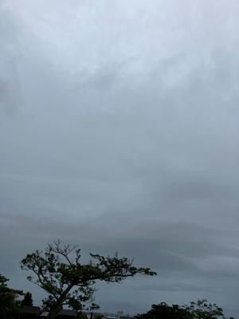
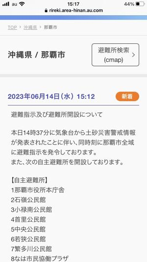

うるがいの話 ある日
最新: 那覇市に避難指示【うるがいの話 ある日】とは 一日だけのプログです
『うるがいの話』の最新一日だけのプログで、通信料が少なく経済的だ。カニの画像をクリックすると全ての日付が載る『うるがいの話』サイトを表示します
|
|
【うるがいの話】 うるがい(ｳﾙｶﾞｲ urugai)とは、『もずくがに』の名前でとても大きくなります。 |
|---|---|
|
|
【カミマヤーの話】 猫のことを方言でマヤーといいます。カミマヤー（kamimayaa）とは、神の猫のことです。 |
|
【たながぁの音楽】 たながぁ（ﾀﾅｶﾞｰ tanagaa）とは手長えびのことで、何種類かあり大きいのは車 エビぐらいになります。 |

|
【ぶながぁの話】 ぶながぁ(ﾌﾞﾅｶﾞｰ bunagaa)とは、赤い髪の毛、赤い身体、そして身長は１ｍ２０ｃｍ ぐらい、川の蟹を食べているの目撃された。場所は沖縄県国頭郡大宜味村のと ある村僕の隣近所に住んでいる爺さんから、聞いた話です。 |
|
|
【ギーマの話】 ギーマ(giima)とは、山原の里山に咲くスズランに似た、 花を付けます。実は食べられます、 気が付くと口の周りが紫になっています。 |
2023年06月14日 (水）那覇市に避難指示
12:16
 
１５時１２分に警報がスマホに。本格的な大雨だ、さすがに外へは出れないだ
ろう（飯を食べに家に来たコドモは、旅行に持っていくと私の予備の髭剃りを
調達し、大雨が降り出した昼１時過ぎに帰って行った）。昨日、夕方にベラン
ダに干した洗濯物は、朝から雨が降り出していたので、そこそこ乾いていた洗
濯物は、朝８時前には取り込み無事に乾燥機で乾燥させた（電気の節約になっ
たはず）。ヨメが利用しているノートパソコン（２０１０年子供のために購入
Ｗｉｎｄｏｗｓ７）が、プラウザが利用できなくなった。半年前から、時々調
子が悪くなっていたのでそろろろと、構えていた。そして、キーボードが壊れ
たコドモが使っていたノートパソコン（２０１２年コドモが購入、Ｗｉｎｄｏ
ｗｓ８）に外付けのキーボードをつけて、ホレとあげる。いずれも内蔵ディス
クやメモリ等をチューニング、Ｗｉｎｄｏｗｓ１０にアップして使っている。
古いものを、やりくりしている（趣味で楽しんでいるが）。
１５時５７分 ビットコインの総資産 ￥１０、５２５（↓３４）
sourcetree reinstall